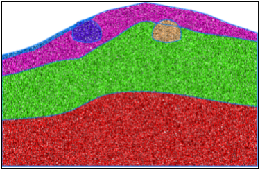
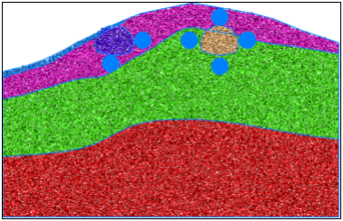
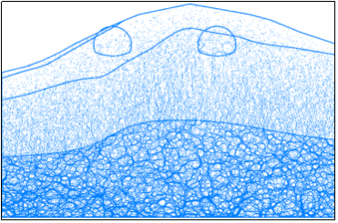
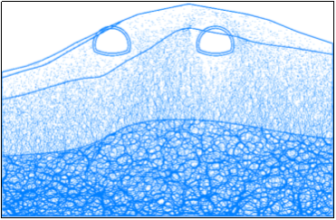
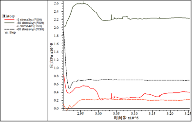
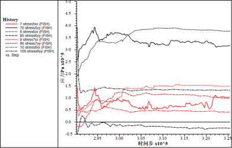
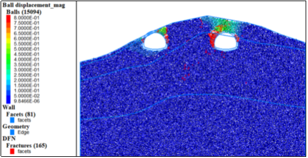

该段隧道断面定位在SZK5-1和SZK5-2地质钻孔处。主要岩层为强风化页岩、中风化页岩，上覆粉质粘土。
(1) 初始模型

图1 初始模型
根据工程地质横断面图在CAD中等比例绘制隧道断面图，根据断面图等比例生成的章庄隧道入口段离散元模型如图1所示，地层从上到下主要为粉质黏土、强风化页岩、中风化页岩。图2给出了相关量测点位置信息，测量点顺序按照顺时针标记。

图2 测量圆分布
(2)力链分布及调整

图3 初始力链

图4 力链调整
西边隧道围岩强度普遍偏低，因此整体力链数值都是偏小，分布差异受重力影响较大，方向以竖直为主。左右两隧道皆位于风化程度较高岩体内，开挖后出现冒落拱状力链调整。
(3)开挖过程应力调整及位移场
表1 初始地应力
量测点 | 水平应力/MPa | 垂直应力/MPa |
1 |
|
|
2 |
|
|
3 | 0.08 | 0.2 |
4 | 0.01 | 0.19 |
5 | 0.14 | 0.26 |
6 | 0.016 | 0.05 |
7 | 0.15 | 0.2 |
8 | 0.05 | 0.4 |
图5和图6给出了开挖过程中应力调整具体信息，3号测量点水平应力在波动中卸载，竖直应力先加载后卸载。4号测量点水平应力缓慢加载，竖直应力急剧卸载。5号测量点水平应力变化规律不显著，竖直应力加载。6号测量点水平加载，竖向变化不明显。7号测量点水平应力卸载，竖向应力加载。8号测量点水平应力基本不变，竖向应力显著卸载。
从图7中可以看出两侧隧道开挖过程中两侧隧道变形显著，由于埋深较浅，岩层风化严重，因此扰动过程中容易发生坍塌，位移量均超过了30cm。

图5 左侧隧道应力调整

图6右侧隧道应力调整

图7位移及裂纹扩展